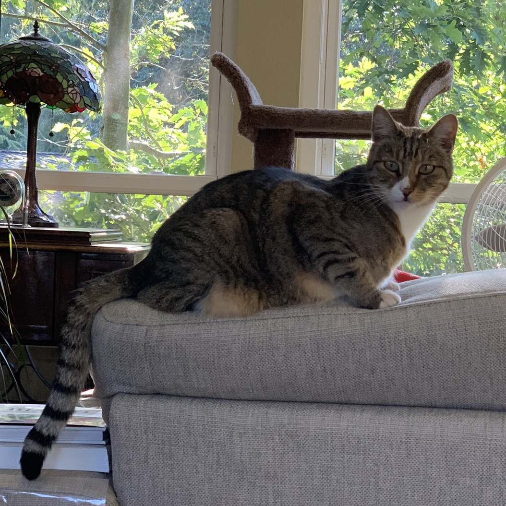
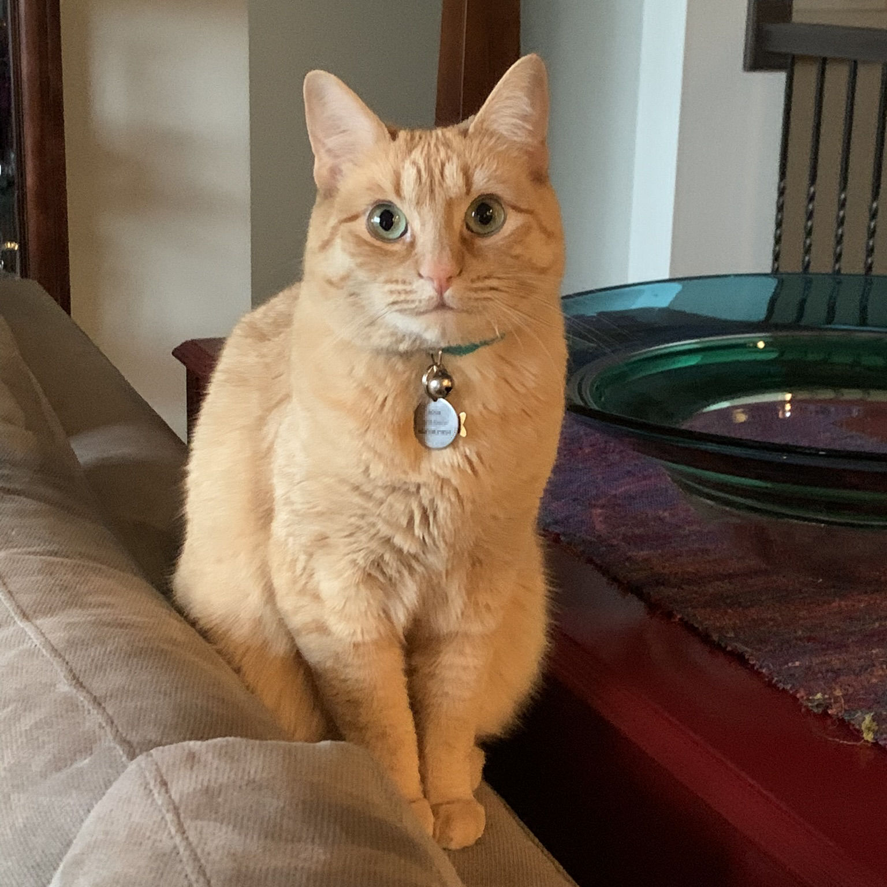
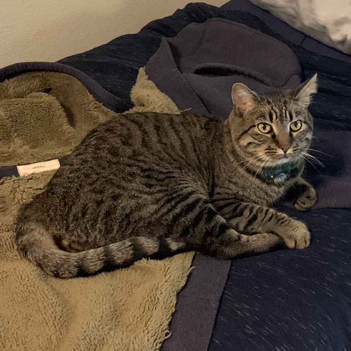

|  | Maize is a lively tabby of 11 years. Although she can be an ankle-biter and loves to scratch upholstery, she is very sweet once she gets to know you. |
|  | Jo is a shy 3 year old orange tabby. She will probably hide in a dark closet now and again, but will make a great companion. |
|  | Breeze is a persistent young brown tabby. He has been known to reach his paws under the doors when it's mealtime! |